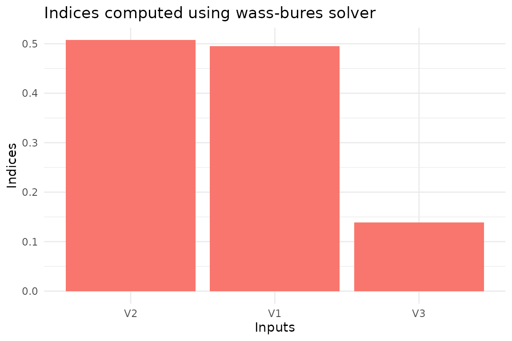
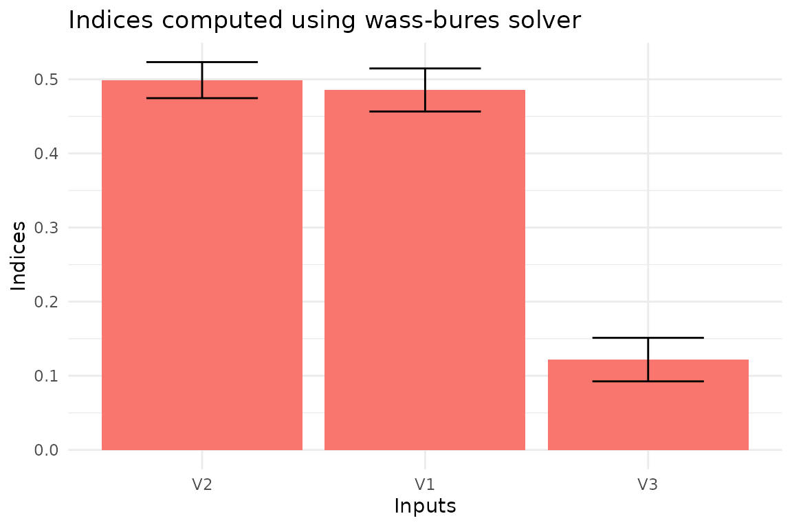

Global Sensitivity Analysis of a simple Gaussian model
Source:vignettes/gaussian-model-sensitivity.Rmd
gaussian-model-sensitivity.RmdIntroduction
Global Sensitivity Analysis has the goal of breaking a mathematical
model’s tough rind, allowing us to look inside. Let’s assume that we are
modeling a problem where two quantities of interest,
,
are defined as a function of three variables,
.
We express this dependence through a linear transformation
,
where
We assume that the inputs are uncertain
and that this uncertainty can be modeled using a multivariate normal
distribution,
,
with
and
To perform an uncertainty
quantification of the model, under the assumed distribution for the
inputs, we can use a simple Monte Carlo simulation. We generate the
input sample (x), and we estimate the model output
(y) for each input. We can define the model and simulate it
in R using the following code block.
# Define the input distribution parameters
mx <- c(1, 1, 1)
Sigmax <- matrix(data = c(1, 0.5, 0.5, 0.5, 1, 0.5, 0.5, 0.5, 1), nrow = 3)
# Define the number of samples
N <- 1000
# Set the random number generator seed for reproducibility
set.seed(777)
# Sample from standard normals
x1 <- rnorm(N)
x2 <- rnorm(N)
x3 <- rnorm(N)
# Transform the standard normals into the required distribution
x <- cbind(x1, x2, x3)
x <- mx + x %*% chol(Sigmax)
# Define the model (matrix with coefficients)
A <- matrix(data = c(4, -2, 1, 2, 5, -1), nrow = 2, byrow = TRUE)
# Generate the output
y <- t(A %*% t(x))
colnames(y) <- c("y1", "y2")We can plot the distribution of the output using the
ggplot2 package.
library(ggplot2)
library(patchwork)
# Set the theme
theme_set(theme_minimal())
# Prepare the marginal and the 2D density plots
p1 <- ggplot(as.data.frame(y), aes(x = y1, y = y2)) +
geom_point(color = "black") +
geom_density_2d()
p2 <- ggplot(as.data.frame(y), aes(x = y1)) +
geom_density()
p3 <- ggplot(as.data.frame(y), aes(x = y2)) +
geom_density() +
coord_flip()
p2 + plot_spacer() + p1 + p3 +
plot_layout(ncol = 2, nrow = 2, widths = c(4, 1), heights = c(1, 4), axes = "collect")Sensitivity analysis
Given this uncertainty, we are interested in knowing which are the
most important inputs in the model. This is the goal the package
gsaot has been designed for. With this package, we can
compute different indices to evaluate the importance of the inputs on
different statistical properties of the output. Let’s first compute the
Wasserstein-Bures sensitivity indices. Since the inputs and outputs are
gaussians, these indices are the actual solution of the Optimal
Transport problem . However, this is not usually the case. The only
hyperparameter needed in this case is the number of partitions for the
input data, M. We set this value to 25 since we only have
1000 data points.
library(gsaot)
M <- 25
indices_wb <- ot_indices_wb(x, y, M)
indices_wb
#> Method: wass-bures
#>
#> Indices:
#> V1 V2 V3
#> 0.4951390 0.5072342 0.1387523
#>
#> Advective component:
#> V1 V2 V3
#> 0.3030834 0.3214758 0.1209107
#>
#> Diffusive component:
#> V1 V2 V3
#> 0.1920556 0.1857584 0.0178415We can also use the package functions to create the plots for the indices.
plot(indices_wb)
To estimate the uncertainty of the indices, we can use bootstrapping.
This is implemented in the function ot_indices_wb through
the option boot = TRUE. In this case, we also have to set
the number of replicas (R).
# Enable bootstrap
boot <- TRUE
# Set the number of replicas
R <- 100
# Define the confidence level
conf <- 0.99
# Define the type of confidence interval
type <- "norm"
# Compute the indices
indices_wb <- ot_indices_wb(x, y, M,
boot = boot, R = R, conf = conf, type = type)
plot(indices_wb)